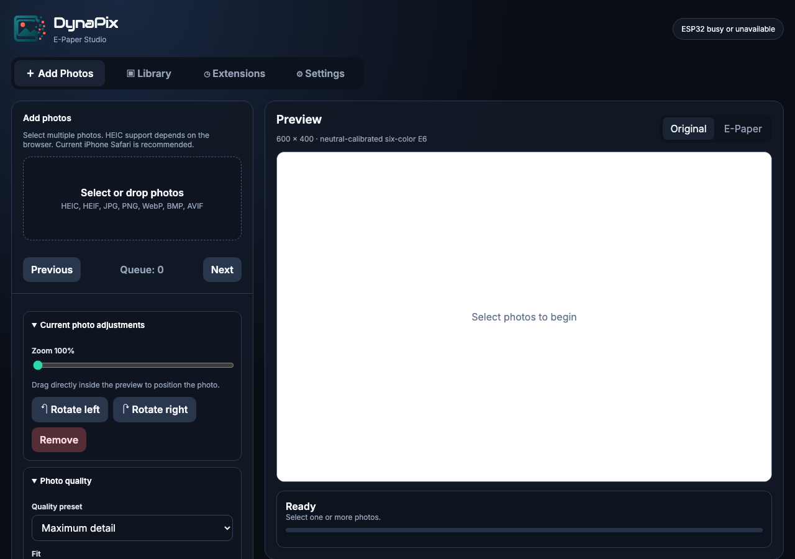
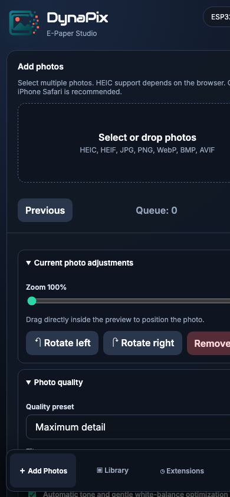

DynaPix Photo Frame — Full User Manual
Table of Contents
- Introduction
- Hardware Overview
- First-Time Setup
- Web Interface Overview
- Photo Upload & Conversion
- Library Management
- Categories
- Slideshow
- Extensions
- Settings
- Maintenance
- Storage & Limits
- Troubleshooting
- Safety & Care
1. Introduction
DynaPix Photo Frame is a Wi-Fi connected, six-color e-paper photo frame built around an ESP32-S3 and a Waveshare 4" E Ink Spectra 6 (E6) display. The frame stores up to 90 photos locally in its internal flash memory and cycles through them as a slideshow.
All management is done through a self-hosted web interface. You do not need an app or a cloud account. The frame can also show optional dashboards: a clock/weather display or a calendar agenda.
2. Hardware Overview
Specifications
- Controller: ESP32-S3 N16R8
- Display: Waveshare 4" E Ink Spectra 6, 600 × 400 pixels, six colors
- Storage: Internal flash via LittleFS (partition size depends on firmware partition table)
- Connectivity: 2.4 GHz Wi-Fi (802.11 b/g/n)
- Power: 5 V USB-C
Display colors
The panel can render six colors:
- Black
- White
- Yellow
- Red
- Blue
- Green
There are no intermediate colors. The converter uses dithering to approximate intermediate tones by scattering these six inks.
Orientation
The frame is designed for landscape mounting. The connector can be on the left or right side. The setting is in Settings → Panel mount.
3. First-Time Setup
Power on
Connect a 5 V USB-C power supply. The frame boots in about 10–20 seconds and starts the fallback access point.
Connect to fallback AP
On your device, connect to:
- SSID:
DynaPix-EPaper
- Password:
dynapix6
Open the web UI
Visit:
http://dynapix.localhttp://192.168.4.1 (fallback AP IP)
- Go to Settings.
- Tap Scan Wi-Fi.
- Select your network.
- Enter the password.
- Tap Save Wi-Fi.
The frame restarts and joins your network. Credentials are saved in flash and survive power loss.
Reconnect
After the restart, connect your own device back to your home network and open http://dynapix.local.
4. Web Interface Overview
The web interface has four main tabs:
| Tab |
Purpose |
| ＋ Add Photos |
Upload and convert new photos |
| ▣ Library |
Manage existing photos, categories, and slideshow selection |
| ◷ Extensions |
Enable clock/weather or calendar dashboards |
| ⚙ Settings |
Wi-Fi, device name, hostname, panel mount, factory reset |

The top bar shows the device name and connection status. The status updates every few seconds.
Mobile layout
On narrow screens, the navigation bar moves to the bottom for thumb access.

5. Photo Upload & Conversion
- HEIC / HEIF
- JPG / JPEG
- PNG
- WebP
- BMP
- AVIF
The browser performs the conversion; iPhone Safari is recommended for HEIC support.
Upload workflow
- Tap ＋ Add Photos.
- Select one or more images via the file picker, or drag files onto the drop zone.
- Each image appears as a thumbnail in the pending strip.
- Tap a thumbnail to select it and adjust:
- Zoom
- Position (drag inside the preview)
- Rotation
- Quality preset
- Fit mode
- Dithering mode
- Advanced tone controls
- Tap Convert & Upload All.
Quality presets
| Preset |
Best for |
| Vivid |
Bright, punchy images |
| Natural |
Accurate, balanced colors |
| Portrait |
Skin tones and faces |
| Graphics |
Logos, text, and flat illustrations |
| Detail (default) |
Maximum fine detail |
Fit modes
- Fill and crop: Fills the 600 × 400 frame and crops excess.
- Fit entire photo: Scales to fit without cropping; may leave white bars.
- Stretch: Distorts to exactly 600 × 400.
Dithering modes
- Smart serpentine: Floyd–Steinberg error diffusion with alternating scan direction.
- Bright Atkinson: Atkinson dithering, often gives a brighter, more localized look.
- Clean: No dithering. Fastest, but limited tonal range.
Advanced controls
Available in the Advanced quality controls section:
- Brightness
- Contrast
- Saturation
- Vibrance
- Shadow detail
- Highlight protection
- Sharpness
- Dither strength
- Color style
- Edge protection
Batch actions
After queuing photos:
- Retry Failed: Re-attempts any failed conversions.
- Remove Completed: Removes successfully uploaded items from the queue.
- Clear Queue: Removes all pending items.
6. Library Management
The Library tab lists all stored photos.
Selecting photos
Click the checkbox on a photo card to include it in the slideshow. The status bar shows how many are selected.
Batch actions
When one or more photos are selected, a floating selection bar appears:
- Select all
- Deselect all
- Delete selected
- Assign categories
Reordering
Tap Reorder to drag photos into the desired sequence. Sequential slideshow mode respects this order.
Rename
Tap the menu button on a photo card and choose Rename.
Delete
- Delete a single photo from its menu.
- Delete many photos with the batch Delete selected button.
Preview
Click a photo's canvas in the Library to display it immediately on the frame (if the display is not busy).
7. Categories
Categories let you group photos and run filtered slideshows.
Creating categories
- In the Library, tap Categories.
- Tap New category.
- Enter a name and pick a color.
Assigning categories
- Select photos in the Library.
- Tap Assign categories in the selection bar.
- Choose Add, Remove, or Replace and pick the category.
Slideshow filtering
In Slideshow settings, choose:
- Category filter: Only include photos from selected categories.
- Match mode:
- Any: Photo matches if it belongs to at least one selected category.
- All: Photo matches only if it belongs to every selected category.
Uncategorized
Photos with no category can be filtered using the special Uncategorized option.
8. Slideshow
The slideshow cycles through selected photos automatically.
Controls
- Start / Pause
- Previous
- Next
The Previous button uses a history of recently shown photos when available; otherwise it picks the previous eligible photo in sequence.
Settings
Tap Slideshow settings to expand:
- Cycle interval: How long each photo stays on screen. Minimum 30 seconds.
- Playback order:
- Sequential: Follows the Library order.
- Shuffle: Random order without repeats until all eligible photos have been shown.
- Category filter: Limit the slideshow to selected categories.
- Match mode: Any / All.
Eligibility
A photo must be:
- Stored on the frame
- Selected in the Library
- Matching the current category filter
If no photos are eligible, the slideshow pauses automatically.
Display behavior
- E-paper refreshes are slow. The frame queues one refresh at a time.
- A full refresh takes several seconds and may flicker; this is normal for six-color e-paper.
- The frame resumes a running slideshow after power loss if the current photo is still eligible.
9. Extensions
The Extensions tab manages optional dashboards that temporarily replace the slideshow.
Clock & Weather
Shows an analog or digital clock plus weather from Open-Meteo.
Setup:
1. Tap Clock & Weather.
2. Tap Activate.
3. Search for your location and select it.
4. Choose layout, temperature unit (Fahrenheit / Celsius), and wind unit (mph / km/h).
5. Set update interval.
6. Tap Save.
Layouts:
- Analog
- Analog modern
- Digital
- Digital + weather
- Analog + weather
- Weather only
The extension updates automatically and displays the dashboard at the configured interval.
Calendar
Shows events from up to four ICS/iCal feeds.
Setup:
1. Tap Calendar.
2. Tap Activate.
3. Add a feed name, URL, and color.
4. Set the UTC offset for your timezone.
5. Set sync interval and layout.
6. Tap Save.
Layouts:
- Agenda
- Agenda + mini month
- Week
- Month
- Clock + agenda
- Clock + weather + agenda
The frame fetches the feeds over HTTPS and caches events locally.
Privacy modes:
- Full: Shows summary, location, and time.
- Busy: Shows only "Busy" instead of summaries.
- Time only: Hides summary and location.
Returning to photos
To stop an extension and return to the photo slideshow:
- Go to Extensions.
- Tap Deactivate on the active dashboard.
- The slideshow resumes with its normal schedule.
10. Settings
Device settings
- Device name: Display name shown in the web UI header.
- Hostname: Used for
http://<hostname>.local mDNS access. Default is dynapix.
- Panel mount: Left or right connector orientation. Affects how uploaded photos are packed for the display.
Wi-Fi settings
- Scan Wi-Fi: Discovers nearby networks.
- Wi-Fi name: SSID to join.
- Password: Network password. Leave blank for open networks.
- Open network: Disables the password field.
Saving Wi-Fi restarts the frame.
Storage
The Settings page shows total and used flash storage. Each photo uses exactly 120 KB.
11. Maintenance
Available at the bottom of Settings:
- Clean up storage: Removes incomplete uploads and rebuilds the photo index.
- Restart device: Reboots the ESP32.
- Reset slideshow: Resets interval to 5 minutes, mode to sequential, and pauses playback.
- Factory reset: Deletes all photos, categories, settings, and saved Wi-Fi. Use with caution.
12. Storage & Limits
| Limit |
Value |
| Max photos |
90 |
| Max categories |
32 |
| Photo file size |
120 KB each |
| Supported formats (source) |
HEIC, HEIF, JPG, PNG, WebP, BMP, AVIF |
| Display resolution |
600 × 400 |
| Native panel memory |
400 × 600 (rotated at upload time) |
Storage usage is shown in the Library and Settings pages.
13. Troubleshooting
Cannot connect to the frame
- Confirm the frame is powered and the USB cable supplies enough current.
- Connect to
DynaPix-EPaper and use http://192.168.4.1.
- If mDNS does not resolve, use the IP address shown in Settings.
Upload fails
- Check free storage in the Library.
- Reduce the number of photos in one batch.
- Try a different browser, especially for HEIC files.
- Check that the photo file is not corrupt.
Slideshow is stuck on one photo
- Make sure at least one photo is selected in the Library.
- Check that the category filter is not excluding all selected photos.
- The display may be busy refreshing; wait for it to finish.
Display is blank
E-paper only changes when a new image is sent. Start the slideshow, display a photo manually, or activate an extension.
Colors look wrong
The panel has a fixed six-color palette. The converter does its best with dithering, but some images will always look different from an LCD screen. Try a different quality preset, dither mode, or tone controls.
Wi-Fi password lost
After a factory reset, saved credentials are gone. Reconnect to DynaPix-EPaper and reconfigure Wi-Fi.
Frame becomes warm
The display refreshes consume power. This is normal during updates; the frame runs cool between refreshes.
14. Safety & Care
- Use only a 5 V USB-C power source.
- Do not bend or press on the e-paper display.
- Avoid exposing the frame to extreme temperatures or humidity.
- E-paper panels can retain a ghost image if left in direct sunlight for long periods.
- The panel refreshes slowly; frequent short intervals will shorten display lifetime and consume more power.
Appendix: Default network
- Fallback AP SSID:
DynaPix-EPaper
- Fallback AP password:
dynapix6
- Default hostname:
dynapix
- Default URL:
http://dynapix.local